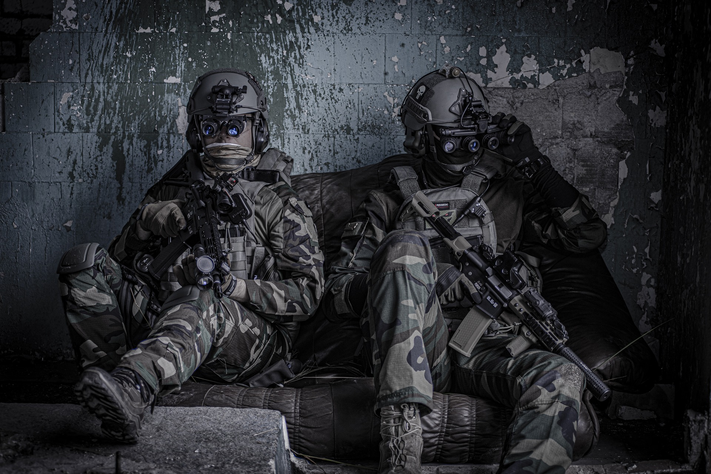
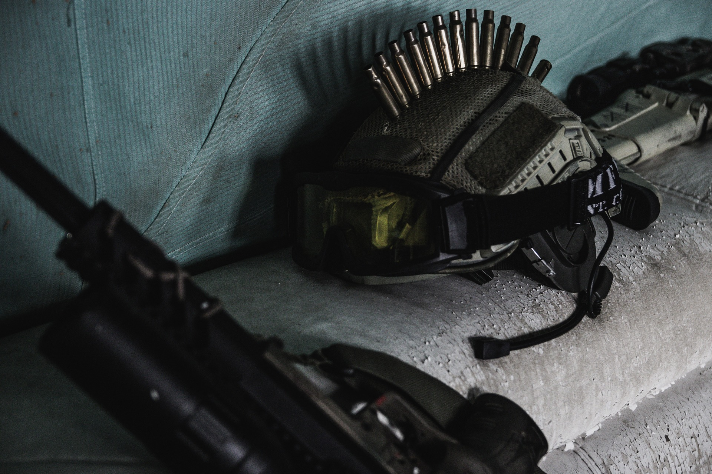
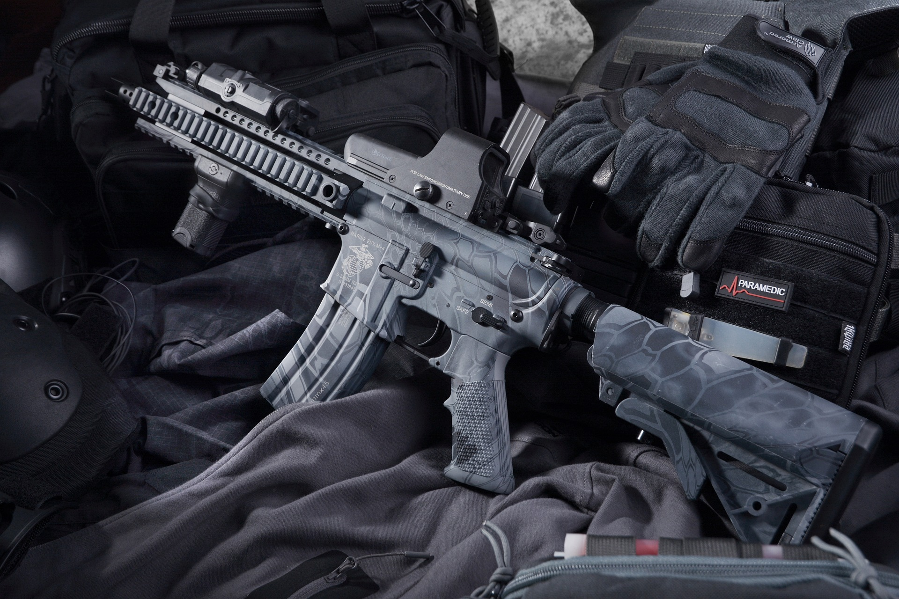
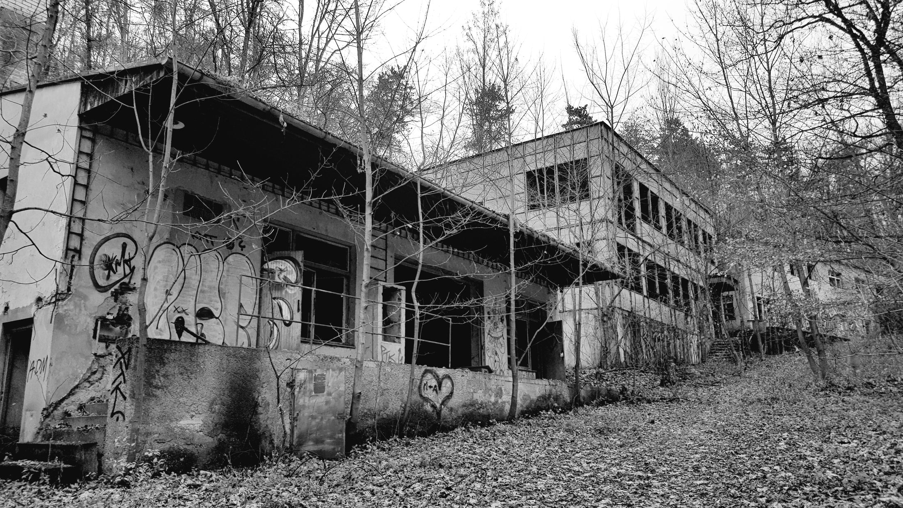
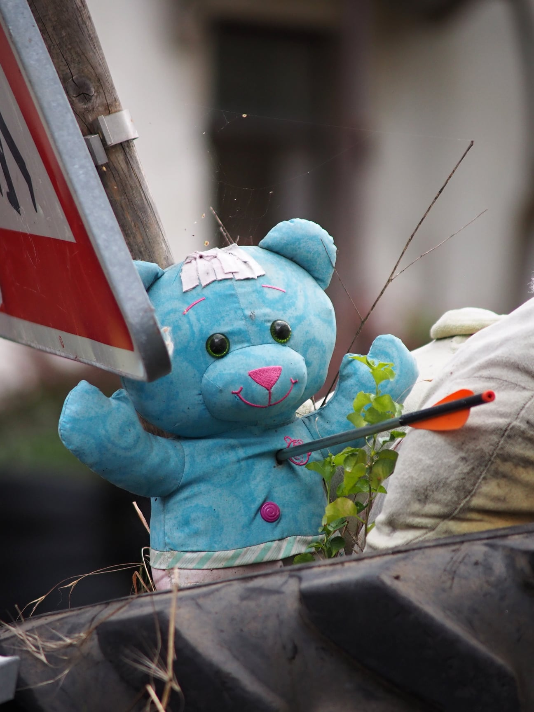

Vítejte v Dynamitce!
Jsme airsoftové CQB hřiště, nově přesunuto v Bohnicích.

Přijď si zahrát!
Ať už jsi začátečník nebo zkušený hráč, jsi u nás vítán.

Co děláme
Organizujeme pravidelné akce, týmové soutěže a nabízíme vybavení k pronájmu.
Půldenní vstup
100 Kč/den
- Hra od 8:00 do 12:00
- Končí před obědem
Celodenní vstup
150 Kč/den
- Končí poslední hrou
- Od 8:00 do 16:00
Pujčovna
100 kč/den
- Zbraně
- Brýle
Limity

AEG/HPA/plyn 𝟭.𝟳 𝗝
(117m/s s kuličkami 0,25g; plynovky a HPA měříme na používaném střelivu, ostatní na 0,25g).

Opakovací pušky 𝟮 𝗝
(manuální/plynové/HPA pušky; 126m/s s kuličkami 0.25g) minimální vzdálenost pro střelbu je 𝟭𝟱 𝗺 a hráč je povinen mít záložní zbraň, splňující limit 1.7J.

Hráči s HPA
Povinnost si přinést vlastní zámek na regulátor, pokud jej nemají, nebudou vpuštěni do hry - BEZ VÝJIMEK!

Granáty
Zásah granátem s obsahem kuliček je platný na vzdálenost o poloměru 3 m od místa iniciace a to jen u přímého zásahu.

Chladné zbraně
Používání gumových nožů, seker a jiných maket bodných nebo sečných zbraní je povoleno po schválení organizátorem, musí být bez ostrých hran a dostatečně měkčeny.

Taktické štíty
Musí vážit alespoň 15 kg (výjimka pro hráče mladší 15 let - štít alespoň 3 kg), nesmí být průhledný (může mít průhledové okénko) a nesmí přesáhnout plochu 9600 cm^2.
Harmonogram
- 08:00 - příjezd na parkoviště
- 08:00 - 8:50 měření a registrace
- 09:00 - začína briefing
- 09:30 - 13:00 dopolední hra
- 13:00 - 14:00 obědová pauza
- 14:00 - odpolední hra
- 16:00 - konec hry
Informace
- Základem je pevná obuv a pak další výbava (maska, brýle, rukavice).
- Používáme převážně automatické zbraně typu G36C.
- Ano, a to buď v doprovodu zákonného zástupce, nebo s sebou na hru musí přinést podepsaní tenhle formulář.
Co si vzít sebou
Jaké zbraně půjčujeme?
Mohou u nás hrát i neplnoletí hráči?
BEZPEČNOST. It’ll blow your mind.
Povinnost nosit ochranné brýle určené pro airsoft (síťované jsou zakázané) po celou dobu pohybu v prostoru a to i mimo hru. Pod 15 let povinnost celoobličejové ochrany.
Střelba mimo hru je zakázaná.
Mimo hru je zbraň zajištěna - hráč svou zbraň zajistí vyjmutím zásobníku, vystřelením do bezpečného prostoru a aktivuje pojistku spouště.
Každý hráč u sebe musí mít ŽLUTOU reflexní vestu pro označení jeho vyřazení ze hry. Osoby bez reflexní vesty jsou považovány za hrající hráče.

PRAVIDLA NA HŘIŠTI. See for yourself.
Výtah z pravidel Bullet Farm.
- Střelba pouze jednotlivě (výjimky uděluje organizátor).
- Mrtvoly nemluví, a to ani přes vysílačku.
- Zakázána střelba naslepo - hráč může střílet pouze na cíle, které se nacházejí v jeho zorném poli.
- Střelba přes malé otvory pokud přes otvor lze prostrčit hlava NEBO hráč odstoupí cca 1,5 m od překážky.
- Granát platný na cca 3 m od místa iniciace, pevná překážka zásahu zamezí, hráč zvolá “překážka” a přesune se na jiné místo. Granáty si sbírá jejich majitel.
- Zásahy jsou platné do jakékoliv části těla nebo výstroje. Neplatné zásahy jsou odraženou kuličkou nebo zásahem z mrtvoliště nebo neherních prostor.
- Zásah do zbraně vyřazuje zasaženou zbraň, hráč zvolá “zbraň” a do návratu na mrtvoliště nesmí zasaženou zbraň používat.
- Při zasažení hráč VYTAHUJE ŽLUTOU reflexní vestu, schová ji až po návratu na mrtvoliště.
- ZÁKAZ demolování, přenášení, barikádování a manipulace s překážkami.

UDÁLOSTI

Burza
Naše burza je místem, kde můžete prodat své nepoužívané airsoftové vybavení a získat vybavení nové.

First shot Dynamitka
Dátum - prvá airsoft hra v novom areáli.

Last shot Klecany
25.6.2023 - se konala poslední hra v areáli Klecany.
Kde nás najdete. Nově jsmě v Bohnicích
Dynamitka Alfréda Nobela, V Zámcích 41, Praha 8 - Bohnice
Herní řád hřiště
Úvodní ustanovení
- Každý účastník airsoftové hry se jí účastní na vlastní nebezpečí a je povinen řídit se pokyny organizátorů a zákony ČR. Organizátoři si vyhrazují právo na vyloučení hráče ze hřiště, pokud bude porušovat herní pravidla nebo zákony ČR, bude se chovat nebezpečně k sobě nebo svému okolí nebo bude pod vlivem omamných nebo návykových látek.
- Pokud bude hráč vyloučen ze hřiště, tak nemá nárok na vrácení příspěvku.Účastníci akce podpisem registračního archu souhlasí s pořizováním audiovizuálního záznamu a to jak od členů organizačního týmu, tak od třetích stran. Zároveň je účastníkům zakázáno v celém areálu Gastown pořizovat audiovizuální záznam bez souhlasu organizátora.
Podmínky pro hru
- Hráč je do hry vpuštěn až po schválení organizátorem, po splnění všech podmínek týkajících se zbraní popsaných v bodě 5 Zbraně a munice, a to kontroly vlastnictví ochrany zraku, kontroly vlastnictví výstražné vesty, podepsání účastníka na seznamu hráčů a odpovědnosti, u hráčů mladších 18ti let je nutné doložit souhlas zákonného zástupce.
Bezpečnost a ochrana zraku
- Všichni hráči mají povinnost nosit ochranné brýle určené pro airsoft (které chrání oči při střelbě na akci povolenými zbraněmi a to ze všech možných úhlů) po celou dobu pohybu v celém herním prostoru (vyjma klubovny), a to i pokud neprobíhá hra. Pokud se hráč nachází v herním nebo neherním prostoru a nemá ochranu zraku, činí tak pouze na vlastní nebezpečí a organizátor nenese žádnou odpovědnost za případnou újmu na zdraví. Střelba i míření je mimo hru přísně zakázána! Před vstupem do klubovny je hráč povinen zajistit svou zbraň vyjmutím zásobníku, vystřelením do bezpečného prostoru (tzv. „rána jistoty” do nádoby s pískem u vstupu do klubovny), a aktivovat pojistku spouště.
Pohyb a chování v prostoru hřiště
- Hráč musí při pohybu v prostoru hřiště dbát zvýšené opatrnosti a chovat se tak, aby nevznikla jakákoliv újma jemu, ostatním hráčům nebo organizátorům. Neherní prostory a prostory, které nespadají do prostoru hřiště, jsou jasně vyznačeny nápisy (např. Konec hřiště, Neherní prostor, Zákaz vstupu, apod.), výstražnými páskami různých barev nebo jsou slovně určeny organizátory. Vzhledem k blízkosti obytných domů a pohybu lidí v areálu je přísně zakázáno střílet mimo herní prostor a hráč by se měl těmto situacím vyvarovat. Střelba i míření zbraní na nezúčastněné osoby v herním prostoru i mimo něj je přísně zakázána. Pokud hráč narazí na civilní osobu v herním prostoru je potřeba střelbu okamžitě zastavit a upozornit na tuto skutečnost organizátora.
- Hráčům je přísně zakázáno přemisťování nebo demolování prvků hřiště (překážky, dveře, okna, mříže, nábytek, sítě v oknech apod.) pokud není organizátory určeno jinak. Neherní prostory budou jasně vyznačeny organizátory a zbraně nacházející se v těchto prostorech musí být vybité a zajištěné nebo řádně zabezpečené proti náhodnému výstřelu např. krytem hlavně.
- V celém prostoru (areálu i hřiště) je přísný zákaz používání jakékoliv pyrotechniky, porušení tohoto zákazu povede k okamžitému vyloučení hráče ze hřiště. Střelba na „mrtvé“ hráče a do prostoru mrtvoliště je zakázána. Pokud hráč objeví na hřišti problém, který souvisí s bezpečností hřiště a pohybu v něm, je povinen toto nahlásit organizátorům.
- Hráči jsou povinni dodržovat zásady “fair play” a obecná pravidla airsoftových her. Hráči mají zakázáno nepravdivě odpovídat na dotazy ohledně jejich rozdělení v týmech (zda-li je tázaný spoluhráč nebo protivník). Pokud je hráč vyzván, aby sdělil, k jakému týmu patří, má povinnost odpovědět pravdivě nebo tuto informaci nesdělovat vůbec (podle situace, která je pro něj takticky výhodnější).
Munice
- Jako munice je povoleno používání pouze 6mm BB plastových kuliček. Výjimku může udělit organizátor (8mm BB, PB munice atd.).
Zbraně
- Pro střelbu na protivníka je povoleno používat pouze airsoftové zbraně, které splňují následující podmínky: úsťová energie nesmí přesáhnout hodnotu 1.7J pro AEG (automatické elektrické zbraně), HPA nebo plynem poháněné zbraně, 2J pro opakovací pušky (opakovací puška je taková, která k funkci vyžaduje před každým výstřelem manuálně nabít další náboj nebo střelu), pořadatel si vyhrazuje právo tento limit upravovat na vybraných akcích (LARP, scénářové akce, apod.) zbraň musí být schopna střelby jednotlivými ranami (výjimku tvoří zbraně, které tento režim neumožňují již z výroby např. kulomety), zbraň musí mít funkční pojistku a vyjímatelný zásobník, pokud tyto podmínku zbraň nesplňuje, tak musí být vybavena krytkou na ústí hlavně, která bezpečně zamezí výstřelu zbraně s HPA pohonem musí být vybaveny zámkem na regulátor
- Na hřišti nesmí být použita zbraň, která nebyla schválena organizátorem! Je přísně zakázáno používat zařízení pro dodatečné snížení (zvýšení) úsťové rychlosti s rychlou demontáží (např. úsťové brzdy, odskoky komor, power-up tlumiče apod.), organizátor si vyhrazuje právo na odstranění vnějších prvků zbraně, u kterých se domnívá, že mohou mít vliv na úsťovou rychlost zbraně a to především při měření úsťové rychlosti. U systémů s rychlou výměnou pružiny nebo např. HPA, kde se dá rychle upravovat výkon zbraně bez nutnosti většího zásahu do jejího vnitřního mechanismu, si organizátor vyhrazuje právo opatřit regulační prvky, mechabox nebo tělo zbraně plombou, která nesmí být poškozena po celou dobu přítomnosti zbraně na hřišti. Organizátor si vyhrazuje právo, kdykoliv přeměřit úsťovou rychlost jakékoliv zbraně přítomné na hřišti.
Granáty
- Na hřišti je povoleno používání airsoftových granátů pouze takového typu, které jsou předem schváleny organizátorem. Granáty, které neobsahují kuličky a jejich efekt je pouze demonstrativní (např. světelný) hráče nevyřazují a slouží pouze jako imitační prostředek. Zásah granátem s obsahem kuliček je platný na vzdálenost o poloměru 3 m od místa iniciace a to jen u přímého zásahu (schování se za překážkou apod. „smrtelnému“ efektu zamezí, hráč musí nahlásit “překážka” a přesunout se mimo zasaženou překážku).
- Je přísný zákaz používání pyrotechnických prostředků (např. dýmovnice, petardy a jiné výbušniny) a hlasitých akustických granátů (např. Thunder B, AI Burst apod.).
Chladné zbraně
- Používání gumových nožů, seker a jiných maket bodných nebo sečných zbraní je povoleno po předchozím schválení organizátorem. Tyto zbraně musí být bez ostrých hran a dostatečně měkčeny, aby nemohlo dojít ke zranění při jejich použití. O tom zda je zbraň povolena rozhoduje výhradně organizátor. Dotyk „ostrou“ částí zbraně se hodnotí stejně jako zásah kuličkou.
- Zbraně je zakázáno vrhat, házet nebo vyhazovat z okna apod.
Platný zásah
- Kuličkou z airsoftové zbraně do jakékoliv části těla nebo výstroje, do zbraně (pokud hráč vlastní sekundární zbraň, hlasitě nahlásí „ZBRAŇ” a do návratu na mrtvoliště smí používat pouze záložní zbraň, při zásahu sekundární zbraně je hráč vyřazen a odchází na mrtvoliště)
- Omylem vystřelenou kuličkou – jak od protivníka, tak od spoluhráče (friendly fire)
- Efektem granátu podle popisu v bodě Granáty
- Gumovou zbraní podle popisu v bodě Chladné zbraně
Neplatný zásah
- Od mrtvoly, která prokazatelně vystřelila až potom co byla sama zastřelena, odraženou kuličkou nebo střelbou z mrtvoliště nebo neherních prostor
Mrtvoly a mrtvoliště
- Zasažený hráč IHNED po prvním zásahu vstane, zvedne ruku/zbraň, slovně ohlásí, že byl zasažen slovy „mrtvola, zásah, mám, apod.“, je povinen NEPRODLENĚ viditelně vytáhnout žlutou výstražnou vestu a odchází na mrtvoliště. Oranžové vesty jsou určeny pouze pro označení organizátorů, sledujících a fotografů. Pokud hráč při odchodu na mrtvoliště nepoužije výstražné vesty, vystavuje se riziku, že po něm budou ostatní hráči nadále střílet.
- Při odchodu na mrtvoliště hráč nesmí bránit svým tělem další hře, bránit protihráčům v palbě a spoluhráči ho nesmějí využívat ke krytí. Zasažený hráč zásadně nemluví až do doby, než dojde na mrtvoliště (neinformuje ostatní hráče o tom kdo a odkud ho zasáhl apod.).
- Je zakázáno využívat ve svůj prospěch mrtvé hráče jdoucí na mrtvoliště.
Taktické štíty
- Taktický štít musí vážit alespoň 15 kg (výjimka pro hráče mladší 15 let - štít alespoň 3 kg), nesmí být průhledný (může mít průhledové okénko) a nesmí přesáhnout plochu 9600 cm^2. Taktický štít musí být schválen a povolen organizátorem. Štít se uvažuje jako neprůstřelná překážka, pokud ke štítu v okolí 3 m dopadne granát, štít musí být odložen a jeho uživatel dále pokračuje bez něj. Štít může být následně donesen zpět na mrtvoliště, kde se obdobně jako vyřazená zbraň může vrátit zpět do hry.
Laserové zaměřovače
- Laserová ukazovátka a zaměřovače jsou na hřišti zakázány. Výjimku může udělit organizátor nebo pokud bude stanoveno jinak pro scénářovou/LARP akci.
Ostatní vybavení
- Ostatní taktické vybavení je dovoleno používat pouze za souhlasu organizátora, do této kategorie patří beranidla, teleskopické žebříky, periskopy apod.